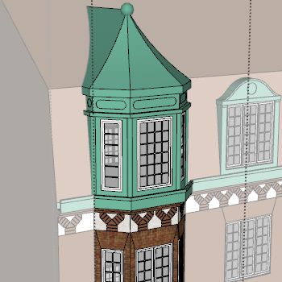

Templates are the base to draw a building from. Installed templates are stored as .bldg files in the building template directory of the plugin directory.
To share a template with someone, just give them the .bldg file for that template. The template directory can be opened from Extensions > Eneroth Townhouse System > Template Editing > Open Template Directory.
While being edited a template is represented by a component. There are 3 ways to obtain such a component.
To save the template to the library (and pack it as a .bldg file) click Save Template in the toolbar .

The main volume of the building must be drawn directly in the component to be recognized by the plugin. The two gable faces must have their normals in negative and positive X. All other faces must be perpendicular to these two.
The easiest way to achieve this is to draw the building profile in the Y Z plane and push-pull it into a volume. The volume can have any length but the length its drawn to will be used when creating the preview image later.
The side of the volume towards negative Y is considered the front side. The facade plane should intersect default ground level along the X axis.
The volume can extend below the origin to make sure the building meets the ground even when drawn on an un-even terrain (I typically extend it 3 m downwards). When volume extends down the side edges of the front facade can be split on the X axis to get an Endpoint to snap to when drawing neighboring buildings.
The template info dialog is used to set the template attributes, such as ID and name.
Name - What the template should be called. So far I haven't come up with a naming convention so write anything you find relevant.
Modeler - The person saving the template. If the template is based on another person's template use your own name anyway but credit them in the description.
ID - Starts with a prefix based on your name to avoid name collisions and people accidentally overwriting each other files when sharing them. If you for instance use the prefix "ene" (reserved by me, Eneroth3) and then update the plugin the template might be overwritten by one I made that is included in the plugin and happens to have the same name.
Alignment tells if the sides of the building are typically aligned towards a street, a courtyard or another building (firewall).
Depth is measured between the facade planes and details such as bay windows and eaves can be ignored.
The part info dialog is used to set attributes to the currently selected group or component, e.g. its positioning within the building.
This option must be set for the part to be drawn at all.
Group/component axes can be displayed by going to Windows > Model Info > Components and tick the checkbox "Show component axes" to easier locate the origins.
Array is used to evenly spread a number of groups/components along the width of the building volume, either by a fixed number or by an approximate distance between.
The Y and Z coordinates of each instance is kept as it is in the original while new X coordinates are calculated for each instance. Typically the group/component should be horizontally centered on its origin.
Margins can be used to add a fixed distance at each side of the facade and spread the instances evenly only in the remaining space.
These are used to place only one instance of the group or component on each facade.
The Y and Z coordinates of the grouo/component is kept as it is while the X coordinate is set according to the positioning setting.
To create a quoins, have one group or component aligned to the left and one to the right. Make sure these groups/componnets have their origins on the side resembling the building corner.
Replacement is used to allow the user to replace one or more instances of an arrayed, aligned, centered or relatively positioned group or component with another group or component. This can be used to replace a window by a door or a balcony.
First of all the part to replace must have been given a name. Then it cam be selected from a dropdown menu for the replacement. The replacement part must also have a name so users can distinguish it in the UI.
For complex replacements, such as a bay window crossing the cornice and continuing onto the roof, the Cut Multiple Faces feature can be used.
For this to work it's important that the origin and axes of the replacement correspond to those of the replacement. If a window for instance has its origin at its bottom a replacing door must have its origin at the same height, and not at the bottom of the door.
Gable is used to place the group or component on the building ends.
The origin is placed either on the start or end of the path the building is drawn to with the X axis pointing inwards to the middle of the building and the Y axis following the gable face. This means the component/group is skewed if the user sets end angles different from 90 degrees.

The gable setting can be used for replacing the firewall at the building short side with a facade. This feature can also be used to add side risalits to the front or add a gateway that is skewed to be parallel with the gable wall. A margin can be suggested for the adjacent facade to prevent arrayed or aligned groups/components from colliding with this one.
Typically the Cut Multiple Faces is used for gables, especially the advanced ones.
Corner is used to place a group/component by a corner of the building.
The Y and Z coordinates of the grouo/component is kept as it is while the X coordinate is set to be on the bisector of the corner. The Y axis of the group/component follows the bisector while the X axis is perpendicular to it.
Typically this setting is used for corner turrets. A margin can be suggested for the adjacent facades to prevent arrayed or aligned groups/components from colliding with this one.
By default all materials on the main volume can be replaced from the building Properties dialog. By ticking "Replace materials within this part" the plugin will also check for and replace materials within this group. This is useful when a group has multiple materials to replace meaning painting the group/component itself doesn't work.
This option is only available for groups. Automatically modifying individual components would clutter the component browser with multiple versions of it. However the plugin allows you to easily convert a component to a group.
Solid union and subtract can be performed with a group/component onto the main volume of the building.
Solid operations are slow to perform. If possible use native cut-opening components instead.
Solid index is used to determine what order to perform the operations in starting at the lowest number. Default is 0.
There's also an option to use the group or component's naked edges to cut openings, similar to the native cut opening feauture but on multiple faces at once. This is strictly isn't a solid operation and is always performed after the the real solid operations (union and subtract). This feature is useful when the part spans multiple faces, e.g. a bay window the roof eaves and continuing on the roof.
For this to work the naked edges of the group/component must lay tight onto the main volume. If there is any gap the plugin can't find what to cut away. It is also important that all faces are correctly oriented for the plugin to distinguish the inside of the cutting loop from the outside.